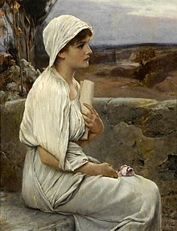
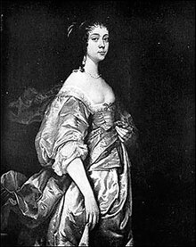
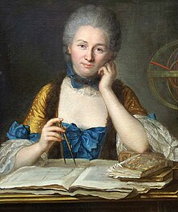

SU INICIO
Las mujeres han contribuido notablemente a la ciencia desde sus inicios. El estudio histórico, crítico y sociológico de este hecho se ha convertido en una disciplina académica en sí misma.
En varias antiguas civilizaciones occidentales hubo mujeres dedicadas a la medicina, y el estudio de la filosofía natural estaba abierto
a las mujeres en la Antigua Grecia. Las mujeres también hicieron aportaciones a la protociencia de la alquimia en el siglo i y ii d
En la Edad Media, los conventos cumplían una importante función para la educación femenina y algunas de estas instituciones les brindaron
a las mujeres la oportunidad de participar en la investigación académica. Pero cuando, en el siglo xi, se fundaron las primeras universidades,
las mujeres quedaron en su mayor parte excluidas de ellas. Fuera del mundo académico, fue la botánica la ciencia que más se benefició de
las aportaciones femeninas al inicio de la Edad Moderna. En Italia parece haber reinado una actitud más abierta que en otros lugares
hacia los estudios de medicina por parte de mujeres.
La primera mujer de la que se sabe que obtuvo una cátedra en una disciplina científica fue Laura Bassi en la Italia del siglo xviii.
Aunque los roles de género estaban muy definidos en el siglo xviii, las mujeres avanzaron de forma visible en lo que respecta a la ciencia.
Si bien hasta el siglo xix se les siguió negando a muchas una educación científica formal, empezaron a ser admitidas en sociedades educativas
de menor nivel. En el siglo xx se produjo un gran cambio; el número de mujeres que estudiaban en universidades aumentó sensiblemente, y comenzaron a
ofrecerse trabajos remunerados a las que se quisiesen dedicar a la ciencia. Marie Curie, la primera mujer en ser galardonada con un Premio Nobel de Física en 1903,
fue también la primera y hasta ahora única persona en obtener dos premios en dos disciplinas científicas, al recoger en 1911 el de química,
en ambos casos por su trabajo sobre la radiactividad. 53 mujeres en total han recibido un Premio Nobel entre 1901 y 2019.
Antiguedad
De la participación de las mujeres en el campo de la medicina se tiene conocimiento en varias civilizaciones tempranas. Agameda fue citada por Homero como curandera en la Antigua Grecia antes de la Guerra de Troya. Hagnódice fue la primera médica en trabajar como tal en el siglo iv a. C. en Atenas. El estudio de la filosofía natural en la antigua Grecia estaba abierto a las mujeres. Ejemplos documentados incluyen a Aglaonice, quien predijo eclipses; y a Téano, una médica y matemática que fue pupila y esposa de Pitágoras, y miembro de la escuela fundada por el filósofo en Crotona, donde estudiaban muchas otras mujeres.

Revolución científica siglos xvi y xvii
A pesar del éxito de algunas mujeres, en la Edad Media los sesgos culturales eran notables y afectaron a la educación y la participación de las mujeres en la ciencia. Muchos de estos prejuicios tienen su origen en la filosofía cristiana. Santo Tomás de Aquino, refiriéndose a las mujeres, escribió en su obra más importante Suma Teológica: "este es el sometimiento con el que la mujer, por naturaleza, fue puesta bajo el marido; porque la misma naturaleza dio al hombre más discernimiento. La Revolución científica de los siglos xvi y xvii vio una gran afluencia de mujeres al campo de la ciencia, aunque se las seguía excluyendo de las universidades. Así, las mujeres interesadas se vieron obligadas a obtener sus conocimientos de manera informal. Los hombres de la nobleza europea eran libres de desarrollar sus intereses en ciencia como pasatiempo, y las mujeres tenían la opción de participar en los trabajos científicos informales junto a sus padres y hermanos. Se alentaban las habilidades en pintura de las mujeres nobles, que a menudo les servían a ellos para detallar y precisar las ilustraciones científicas.

Siglo xviii
La Ilustración vio la expansión del rol de las mujeres en la ciencia. El surgimiento de la cultura del salón literario en Francia durante este tiempo, llevó a los filósofos y sus conversaciones sobre temas de política, sociedad y ciencia contemporánea, a las casas de los pudientes y poderosos. Estos salones eran mayoritariamente dirigidos por mujeres, ya que la casa era tradicionalmente espacio de la mujer, y muchas damas reconocidas emergieron como figuras destacadas tanto por sus dotes de anfitrionas, reuniendo a los ilustrados intelectuales del momento, como por sus propias contribuciones intelectuales a la conversación.
